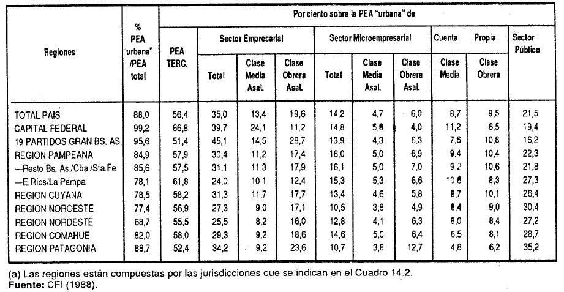

Capítulo 8 Tiempo, espacio y clases sociales
En este capítulo trabajaremos a partir de las siguientes librerías de R:
Hasta aquí, en el libro tratamos de presentar el modo en que puede desentrañarse, principalmente a través de algunos procesos metodológicos, algunos aspectos de la realidad socio-económica. Siguiendo la propuesta de Osorio (2001), al estudiar las clases sociales, lo que hacemos es bucear en los espesores profundos de la estructura social para hallar ahí mecanismos y regularidades que no se brindan de modo transparente en la superficie inmediata que experimentamos cotidianamente. Retomando el ejemplo citado por el autor (Osorio, 2001, pp 41), una persona puede indicar o nos puede parecer de una clase, pero el análisis de una interrelación de factores nos puede llevar a posicionarlo en otra situación.
De este modo, además de los espesores, la dimensión temporal y la dimensión espacial son dos de los procesos sociales más importantes para evaluar los cambios que se producen en la estructura de clases y en la desigualdad que desde la misma se genera. La estructura social, y particularmente, las clases sociales no asumen la misma forma y composición a lo largo del tiempo, ni en los distintos niveles geográficos de un país, de un continente o del mundo. En este capítulo nos proponemos realizar una breve presentación acerca de cómo estos aspectos han sido tratados en la bibliografía del estudio de las clases sociales. Al mismo tiempo brindaremos algunos ejemplos sobre cómo podemos trabajar empíricamente dichas dimensiones.
8.1 La dimensión temporal
Uno de los primeros elementos a resaltar en el estudio de la dinámica temporal es que el tiempo social es distinta a la del tiempo cronológico. Mientras que este último es lineal, continuo y homogéneo, el tiempo social es diferencial, heterogéneo y discontinuo (Osorio, 2001, pp 46). En ciencias sociales el tiempo es clasificado, caracterizado y recortado en función de los procesos que acontecen. En este sentido, comúnmente hablamos de corto, medio y largo plazo. Mientras que el tiempo corto son breves y concentrados, en el tiempo medio y largo, los mismos se presentan en forma dilatada (Osorio, 2001, pp 49).
La elección de que unidad temporal analizar será consecuencia no sólo de los objetivos de investigación, sino también del proceso social que se desea investigar. Por ejemplo, los estudios de estructura de clases o de movilidad social inter o intrageneracional, rara vez son analizados a partir de períodos cortos (uno o dos años), ya que los cambios estructurales suelen producirse en forma lenta y paulatina. Vale el ejemplo de los procesos de transformación en la estructura social a partir la migración del campo a las ciudades o de los cambios producidos a partir de la instauración de un modelo de acumulación basado en la valorización financiera.
Esto no significa que no podamos estudiar la estructura de clases en el corto plazo. En momentos en los que se producen cambios profundos en forma rápida, como por ejemplo una pandemia o un proceso hiperinflacionario, un análisis del corto plazo puede brindarnos mucha información acerca de cómo el impacto pudo haberse producido en forma diferencial por clase social.
8.1.1 Algunos ejemplos de la bibliografía
El estudio del cambio de la estructura de clases a través del tiempo fue una de las principales preocupaciones de los primeros trabajos sobre la temática realizados en Argentina. En este sentido, Gino Germani, pionero no sólo de la institucionalización de la sociología en el país sino en el estudio de la estructura social, en su principal obra, Estructura social de la Argentina (1955), aborda los cambios producidos en las clases sociales a partir de la información censal disponible desde el censo de 1895.
Gráfico 8.1: Evolución de la estratificación social. 1869-1960. Germani (1971)

Dicho trabajo fue continuado por Susana Torrado en su libro Estructura social de la Argentina, 1945-1983 (1992), aunque aplicando el esquema de clases construido por la autora. Luego, fueron incorporados los censos de 1980 a 2010 por Sacco (2019), recontruyendo el esquema de clases de Torrado.
Gráfico 8.2: Evolución de la estructura de clases. Total país 1947-1991. Torrado (2007)

En otros trabajos se ha optado por el estudio de los cambios producidos en la estructura de clases pero en el mediano plazo. Para ello se ha recurrido fundamentalmente a la EPH, dado su carácter de relevamiento continuo y el tipo de variables socio-ocupacionales que contiene. De este modo podemos citar los trabajos de Benza (2016), Chávez Molina & Sacco (2015), Pla et al. (2018), Sacco (2019) o Chávez Molina & Rodríguez de la Fuente (2021).
Gráfico 8.3: Evolución de la estructura de clases. Total país 2011-2019. Chávez Molina & Rodríguez de la Fuente (2021)

8.1.2 Ejemplo práctico
Ahora veremos como llevar a cabo un análisis de clase a lo largo de un período. El estudio puede abordarse desde varias aristas. Podemos analizar como ha evolucionado la estructura de clases en su tamaño y/o composición o cómo ha evolucionado respecto a alguna variable dependiente (ingresos, riqueza, características habitacionales, etc.), por ejemplo. Puntualmente la evolución de las clases sociales entre 2011 y 2015, tomando como fuente de información a la EPH. A los fines de simplificar el ejemplo, trabajaremos únicamente con la población ocupada correspondiente a los segundos trimestres.
Para ello, tal como hemos visto en el Capítulo 2, descargaremos las bases utilizando el paquete eph, con su función get_microdata.
eph_1115 <- get_microdata(year = 2011:2015, trimester = 2, type = "individual")Como puede verse ahora contamos con una base de 333.819 casos y con información para los seis años seleccionados.
nrow(eph_1115)[1] 292198
table(eph_1115$ANO4)
2011 2012 2013 2014 2015
58726 56915 55417 61112 60028 Descargadas y pegadas las bases, utilizaremos el código de ejemplo presentado en el Capítulo 5.3 para operacionalizar el esquema de clases. Al ser un código largo, sólo lo aplicaremos sobre la base sin mostrar el script. Luego de seleccionar únicamente a los individuos ocupados, realizaremos una distribución de frecuencias de la clase social con el total de los casos para comprobar si la operacionalización funcionó.
eph_1115_ocup <- eph_1115 %>%
filter(ESTADO == 1)
summarytools::freq(eph_1115_ocup$clase6_factor, weights = eph_1115_ocup$PONDERA, justify = "center", cumul = FALSE)Weighted Frequencies
eph_1115_ocup$clase6_factor
Type: Factor
Weights: PONDERA
Freq % Valid % Total
-------------------------------------------- ------------- --------- ---------
Clase alta 429662.00 0.79 0.78
Clase media - autónoma 7178247.00 13.19 13.11
Clase media - asalariada 20140492.00 37.02 36.77
Clase obrera - autónoma 5064586.00 9.31 9.25
Clase obrera - asalariada 17593697.00 32.34 32.12
Clase obrera - trabajadores marginales 3995731.00 7.34 7.30
<NA> 368788.00 0.67
Total 54771203.00 100.00 100.00 Finalmente ya estamos en condiciones de construir una nueva tabla (no mostrsada en la salida) en donde podamos cruzar la variable de clase social (clase6_factor) con la variable año (ANO4). Para ello, utilizaremos algunas de las herramientas del paquete dplyr. En primer lugar filtraremos aquellos casos perdidos (NA) para la variable de clase. Luego agruparemos los datos por año y clase (group_by) y contabilizaremos los casos (tally). Es importante notar que lo que sumamos son los casos brindados por la variable PONDERA, por eso es necesario declarar al ponderador a través del wt = PONDERA. Ya con las frecuencias absolutas por clase y año calculadas es posible llegar a los porcentajes. De este modo, volveremos a agrupar los datos por año y crearemos una nueva variable (mutate) que divida a cada frecuencia por su sumatoria total (n/sum(n)) y la multiplique por 100. Para hacer más fácil la lectura, dejaremos únicamente dos decimales. Finalmente para pasar de un formato largo de tabla a uno ancho, aplicaremos la función spread.
tabla_anios <- eph_1115_ocup %>%
filter(!is.na(clase6_factor)) %>%
group_by(ANO4, clase6_factor) %>%
tally(wt=PONDERA) %>%
group_by(ANO4) %>%
mutate(percent = round((n/sum(n))*100, digits = 2)) %>%
select(clase6_factor, ANO4, percent) %>%
spread(ANO4, value = percent)Es necesario aclarar que hay muchas formas de construir una tabla de doble entrada, así como de configurarla. Para ver otras opciones recomendamos explorar los paquetes janitor y summarytools.
Otra opción de presentación es la elaboración de un gráfico de barras. Para ello recurriremos al paquete ggplot2 y a la función geom_col. En este caso, al principio, repetiremos parte de la secuencia de pasos utilizada para el armado de la tabla, hasta la generación de la variable percent. Luego llamando a la librería ggplot2, definiremos la estética (aes) indicando el eje x (años), el eje y (porcentajes) y la variable que determinará el color de las barras (fill), es decir, la clase social. Posteriormente llamaremos a la función geom_col() y luego a geom_text para identificar con números los porcentajes en las barras. El resto de las opciones mejoran la salida gráfica configurando diversos aspectos.
eph_1115_ocup %>%
filter(!is.na(clase6_factor)) %>%
group_by(ANO4, clase6_factor) %>%
tally(wt=PONDERA) %>%
group_by(ANO4) %>%
mutate(percent = round((n/sum(n))*100, digits = 2)) %>%
ggplot(mapping = aes(x = ANO4, y = percent, fill = clase6_factor)) +
geom_col() +
geom_text(aes(label = percent), position = position_stack(.5), size = 3) +
scale_fill_discrete(labels = function(x) str_wrap(x, width = 25)) +
labs(title = "Evolución de la estructura de clases sociales",
subtitle = "Población ocupada. Argentina urbana 2011-2015.",
caption = "Fuente: Elaboración propia en base a EPH-INDEC 2011-2015.",
fill = "Clase social") +
theme(legend.title = element_text(size = 10, face = "bold"),
legend.text = element_text(size = 10),
axis.title.x = element_blank(),
axis.title.y = element_blank(),
axis.text.y = element_text(size = 10),
axis.text.x = element_text(size = 10),
plot.title = element_text(size = 12, face = "bold"),
plot.subtitle = element_text(size = 11),
plot.caption = element_text(size = 10, hjust = 1)) +
scale_x_continuous(breaks = c(2011:2015)) +
scale_y_continuous(breaks=seq(0, 100, 10))Gráfico 8.4: Ejemplo de gráfico de columnas con la variable clase social

8.2 La dimensión espacial
La dimensión espacial es otro de los elementos que todo estudio de la estructura social y de las clases sociales debería considerar. Como bien señala Osorio (2001, p. 51) ésta remite al vínculo sociedad-naturaleza, al clima y a las condiciones geográfico-naturales que desempeñan un papel fundamental en la historia. Naciones, provincias, departamentos y hasta ciudades condensan una serie de heterogeneidades en su interior y entre sí mismas, que obligan al investigador a considerarlas en su fase de análisis.
Claro está que no siempre contamos con las fuentes de información óptimas para abordar dicha heterogeneidades geográficas. Por ejemplo, con la EPH, fuente que venimos utilizando en este libro, podemos tener una desagregación espacial para el país por aglomerados, provincias o regiones, pero siempre considerando a la población urbana encuestada. Algo similar sucede con otras encuestas de hogares como la ENES-PISAC.
Por el contrario, la información censal nos permite acceder a un nivel de desagregación geo-estadísticas de mayor precisión, tales como las fracciones y los radios censales. De esta forma, el mosaico de heterogeneidades sociales que podemos representar se vuelve más complejo a través de este tipo de fuente de datos.
Gráfico 8.5: Ejemplo de unidades geo-estadísticas del INDEC. 1) Provincias; 2) Departametnos; 3) Fracciones censales; 4) Radios censales. Fuente: elaboración propia en base a Cartografía y códigos geográficos del Sistema Estadístico Nacional

8.2.1 Algunos ejemplos de la bibliografía
Por limitaciones de las fuentes de información, en los estudios de estructuras de clases, cuando se cruzan los datos construidos con información espacial se suelen hacer comparaciones entre unidades de mayor nivel, tales como los países o las provincias y regiones dentro de las naciones. Por ejemplo, el análisis de Solís, Chávez Molina y Cobos (2019) se compara la estructura de clases reciente en 9 países latinoamericanos. Para ello se recurrió a información específica proveniente de encuestas de hogares de cada uno de los países seleccionados, que luego fue armonizada para poder ser comparable.
Gráfico 8.6: Estructura de clases en países de América Latina. Población entre 15 y 64 años. 2011-2015. Solís, Chávez Molina y Cobos (2019, pp 861)
![Estructura de clases en países de América Latina. Población entre 15 y 64 años. 2011-2015. Solís, Chávez Molina y Cobos [-@Solis.etal2019, pp 861]](imagenes/tabla_solis.png)
En Argentina, al igual que para el caso del análisis en el tiempo, los trabajos de Germani, Torrado también abordaron el análisis de la dinámica del cambio en la estructura de clases en agregados geográficos subnacionales.
Gráfico 8.7: Estructura de clases en las distintas jurisdicciones del país. Gráfico extraído de Germani et al. (2010)

Posteriormente, bajo la asesoría general de Susana Torrado, desde Consejo Nacional de Inversiones (CFI, 1988), se elaboraron informes para cada una de las provincias y el total país, en donde se caracterizaba la estratificación social y las condiciones de vida de la población, teniendo como fuente de datos el Censo Nacional de Población y Vivienda de 1980. Gran parte de dicho análisis fue retomado luego y publicado en el libro Estructura social de la Argentina, 1945-1983 (Torrado, 1992).
Gráfico 8.8: Indicadores de la estructura social por regiones. 980. Torrado (Torrado, 1992, pp 386)
Actualmente, con el avance y la difusión de la utilización de sistemas de información geográfica (SIG), se abrió la posibilidad de representación gráfica a través de mapas temáticos de información censal o proveniente de encuestas de hogares. Si bien aún en los estudios de estructura de clases no se ha tornado en una práctica frecuente, cada vez aparecen más trabajos que recurren a la representación geográfica de los datos para ilustrar los cambios y la evolución en la estructura social y de clases.
Por ejemplo, Mike Savage y otros (2013) llevaron a cabo junto a la BBC una encuesta de representación nacional (BBC’s 2011 Great British Class Survey), a través de la cual, a partir de la técnica de clases latentes, presentaron un nuevo abordaje en el estudio de las clases sociales conformado a partir de 7 clases. En ese trabajos, los autores recurren a una serie de mapas para demostrar cómo dichas clases se distribuyen al interior de Gran Bretaña.
Gráfico 8.9: Distribución espacial de la clase trabajadora tradicional. Savage et al. (2013, pp 241)
![Distribución espacial de la clase trabajadora tradicional. Savage et al. [-@Savage.etal2013, pp 241]](imagenes/savage_regiones.png)
8.2.2 Ejemplo práctico
Ahora veremos como llevar a cabo un análisis de clase según información espacial. Cómo dijimos anteriormente, la profundidad del tipo de análisis que podamos realizar va a depender del tipo de fuente con la que trabajemos. En este caso, vamos a aprovechar el pool de bases de EPH que hemos pegado para los años 2011 a 2015.
En forma simple vamos a indagar como se distribuyen las clases sociales al interior de cada una de las regiones identificadas por INDEC. En primer lugar, construyamos una tabla (no mostrada) de doble entrada que nos permita mostrar dicha información.
# 1) Creo una variable factor con los nombres de las regiones (region_f)
eph_1115_ocup$region_f <- factor(eph_1115_ocup$REGION, labels = c("GBA", "NOA", "NEA", "Cuyo",
"Pampeana", "Patagonia"))
# 2) Construimos un objeto tabla cruzando la variable clase6_factor y region_f
tabla_regiones <- eph_1115_ocup %>%
filter(!is.na(clase6_factor)) %>%
group_by(region_f, clase6_factor) %>%
tally(wt=PONDERA) %>%
group_by(region_f) %>%
mutate(percent = round((n/sum(n))*100, digits = 2)) %>%
select(clase6_factor, region_f, percent) %>%
spread(region_f, value = percent)Finalmente presentamos un ejemplo de representación de la tabla anteriormente construida en un mapa temático. R posee varias librerías para manipular información de tipo geográfica. En este caso utilizaremos el paquete sf. Lo que haremos es representar en mapas en miniatura de Argentina, el porcentaje de individuos pertenecientes a cada clase social por región.
A los fines de este ejemplo, trabajaremos con la cartografía por departamentos que proporciona INDEC (https://www.indec.gob.ar/indec/web/Institucional-Indec-Codgeo). Si bien no es la finalidad de este libro introducir el uso de herramientas SIG14, a continuación presentamos el procedimiento “paso a paso” para la creación del mapa temático.
# 1) Cargamos el archivo .shp y lo guardamos en el objetivo espacial "argentina"
argentina <- st_read("cartografia/argentina_n.shp")Reading layer `argentina_n' from data source
`C:\Users\josed\Documents\Repositorios_git\clases-arg\cartografia\argentina_n.shp'
using driver `ESRI Shapefile'
Simple feature collection with 1242 features and 10 fields
Geometry type: POLYGON
Dimension: XY
Bounding box: xmin: -74 ymin: -90 xmax: -25 ymax: -22
Geodetic CRS: WGS 84
# 2) Filtramos al territorio antártico ya que no contamos con información en la EPH y se dificulta la visualización del mapa
argentina <- argentina %>%
filter(!link %in% c("94028"))
#provincias <- st_read("E:/OneDrive/Otros/proyectos_R/mapas/Codgeo_Pais_x_prov_datos/provincias_n.shp")
# 3) Creamos un vector con los 31 códigos geográficos de los 31 partidos del GBA
partidos <- c("06028", "06035", "06091", "06134", "06252", "06260", "06270", "06274", "06364", "06371",
"06408", "06410", "06412", "06427", "06434", "06490", "06515", "06525", "06539", "06560",
"06568", "06638", "06648", "06658", "06749", "06756", "06760", "06778", "06805", "06840",
"06861")
# 4) Definimos dentro del objeto geográfico "argentina" a la columna link como caracter y a la columna codpcia como numérica
argentina$link <- as.character(argentina$link)
argentina$codpcia <- as.numeric(argentina$codpcia)
# 5) Creamos en el objeto "argentina" una variable llamada REGION que agrupe a las provincias igual que en la EPH
argentina <- argentina %>%
mutate(region_f = case_when(codpcia == 2 | (link %in% partidos) ~ "GBA",
codpcia == 10 | codpcia == 38 | codpcia == 46 | codpcia == 66 |
codpcia == 90 | codpcia == 86 ~ "NOA",
codpcia == 18 | codpcia == 22 | codpcia == 54 | codpcia == 34 ~ "NEA",
codpcia == 50 | codpcia == 70 | codpcia == 74 ~ "Cuyo",
(codpcia == 6 & !(link %in% partidos)) | codpcia == 30 | codpcia == 14
| codpcia == 82 | codpcia == 42 ~ "Pampeana",
codpcia == 58 | codpcia == 62 | codpcia == 26 | codpcia == 78 |
codpcia == 94 ~ "Patagonia"))
# 6) Volvemos a crear una tabla con los porcentajes de individuos por clase sociales según región, pero esta vez en formato largo
tabla_larga <- eph_1115_ocup %>%
filter(!is.na(clase6_factor)) %>%
group_by(region_f, clase6_factor) %>%
tally(wt=PONDERA) %>%
group_by(region_f) %>%
mutate(percent = round((n/sum(n))*100, digits = 2))
# 7) Unimos el objeto "argentina" con la tabla larga que contiene los porcentajes por clase y región, tomando como variable identificadora REGION
mapa <- merge(argentina, tabla_larga, by="region_f", all.x = TRUE)Puntualmente, el comando geom_sf del ggplot2 nos permitirá superponer capas con información georreferenciada, como en este caso los departamentos del país. A su vez, el comando facet_wrap del mismo paquete nos permite representar un gráfico (en este caso un mapa) para la variable que seleccionemos (clase social).
ggplot() +
geom_sf(data = mapa, aes(group = region_f, fill = percent), color = NA) +
theme_map() +
labs(fill = "% Clase social",
title = "Distribución de las clases sociales por región",
subtitle = "Población ocupada. Argentina urbana 2011-2015.",
caption = "Fuente: Elaboración propia en base a EPH-INDEC 2011-2015.") +
theme(legend.title = element_text(size = 10, face = "bold"),
legend.text = element_text(size = 9),
legend.key.width = unit(1.5, "cm"),
legend.position = "bottom",
legend.justification = "center",
plot.title = element_text(size = 12, face = "bold"),
plot.subtitle = element_text(size = 11),
plot.caption = element_text(size = 10, hjust = 1),
strip.text = element_text(face = "bold", size = 10)) +
scale_fill_viridis_c(direction = -1) +
facet_wrap(~clase6_factor, ncol = 7, labeller = labeller(clase6_factor = label_wrap_gen(15)))Gráfico 8.10: Ejemplo de mapa temático utilizando la variable clase social